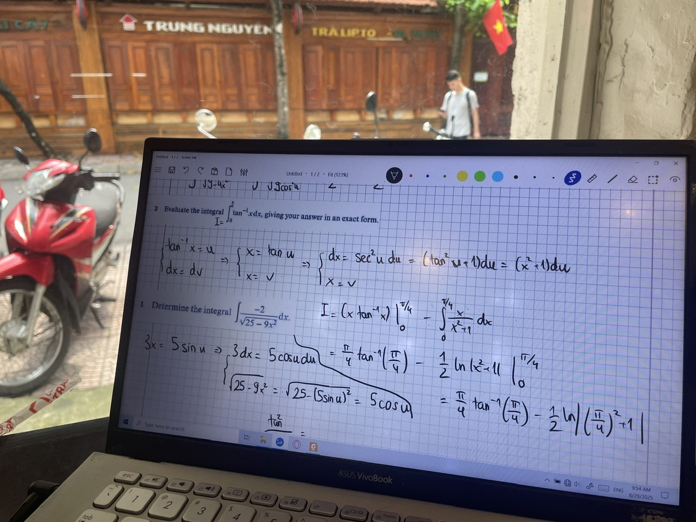
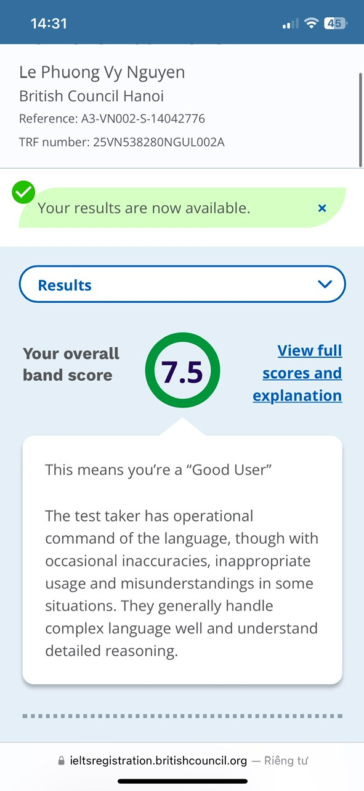

Nhấn để quay về trang đầu
Môn toán |
 | Tôi thích môn toàn từ những năm đầu học cấp 2 bởi môn toán không yêu cầu phải học thuộc quá nhiều. Đặc biệt trong thời điểm dịch Covid 19 tôi nghiện game và không muốn tập trung học hành, môn toán là môn duy nhất tôi có hứng thú học bởi môn này không đòi hỏi tôi quá nhiều sự cố gắng để học thuộc bài. Sau khi cai nghiện game, tôi đi học một số lớp ôn chuyên toán và hiện tại tôi là học sinh lớp chuyên toán trường Ams :)) |
Môn Vật Lý |

|
Trong tất cả các môn học tôi từng tiếp xúc, vật lý là môn giống với toán nhất. Đương nhiên thi thoảng tôi gặp một số bài lý yêu cầu hiểu hiện tượng tự nhiên những nhìn chung lý vẫn là môn học không yêu cầu học thuộc nhiều, đánh đố bằng tư duy và logic. Ngoài ra vật lý cũng là môn quan trọng đối với định hướng học kĩ thuật điện của tôi sau này |
Môn Tiếng Anh |
 | Trong 3 môn học tôi liệt kê, môn tiếng Anh là môn học yêu cầu học thuộc nhiều nhất. Tôi cũng không nghĩ bản thân có trí thông minh tự nhiên về ngôn ngữ và sở dĩ tôi phải học tiếng Anh vì nó gần như là bắt buộc trong đời sống hiện nay. Tôi dần quen với việc học từ mới, mỗi ngày cầm quyển sổ từ vựng lật qua lật lại. Tiếng Anh tuy gây nhiều khó dễ cho tôi trong thời gian hoc nhưng nó lại đem lại nhiều lợi ích và cơ hội trong học tập và về sau là cả sự nghiệp. |